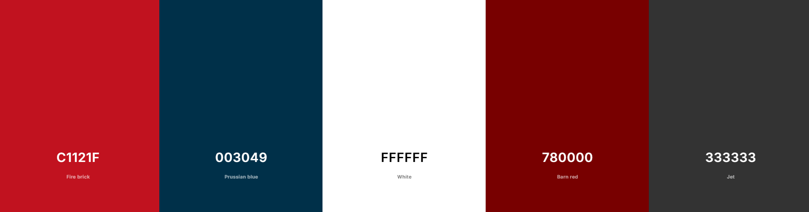

Site Plan - Final Project
Site Name
Name: Watchly
I chose this name because it is clear, descriptive, and easy to remember. It reflects exactly what the site does: helping users track and discover movies and series.
Site Purpose
The purpose of this site is to allow users to explore movies and series by genre, view examples, and create a personalized watchlist. Titles added to the watchlist will be saved in the browser using localStorage, so they remain available when the user revisits the site.
Scenarios
- “What are some recommended movies and series in the Action or Comedy genres?”
- “How can I save the titles I want to watch later and access them again?”
Color Schema
- #c1121f → primary (buttons, highlights)
- #003049 → secondary (navbar, subheadings, emphasized text)
- #333333 → neutral dark (body text)
- #780000 → optional accent (icons, lines, hover alternate)
- #ffffff → neutral light (background)

Typography
- Headings: Oswald, sans-serif (bold, cinematic feel).
- Body text: Roboto, sans-serif (clean, easy to read).